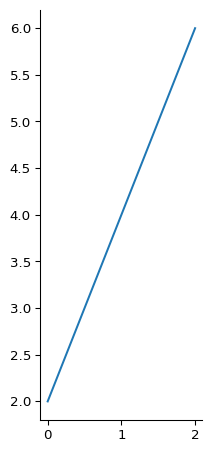

def times_2(x):
return 2 * x4 Functions
Introduction
Until now, we’ve mostly been using built-in Python’s functions like print(), len(), and range() to get things done. While Python’s standard library provides a ton of useful functionality, eventually you will need to create something more tailored to your specific needs.
This is where custom functions come in. Functions are like reusable blocks of code that you design to perform specific tasks. Creating your own functions allows you to extend Python’s capabilities beyond what’s available “out of the box.” In this module, we’ll explore functions from the ground up: their purpose, how to create them, and how to write them effectively.
Learning to work with functions is a core programming skill that offers several key benefits:
- It helps you tackle large problems by breaking them into smaller, manageable parts
- It makes your code more organized and easier to follow
- It makes your code easier for others to understand and use
- It eliminates the need to copy and paste code repeatedly
- It reduces mistakes by creating tested, reliable code blocks you can reuse
Whether you’re analyzing data sets, automating repetitive tasks, or building scientific applications, functions will become an essential part of your programming toolkit. Let’s dive in and learn how to create them!
What is a Function?
A function is a reusable block of code that performs a specific task, a sort of standard procedure for performing a particular computation or task in your code.
Functions help us organize our code by breaking down complex problems into smaller, more manageable pieces. For example, instead of writing one massive program that does everything, we can create separate functions for each logical step. This makes our code easier to write, understand, and fix when something goes wrong.
One important feature of functions is that we can give them descriptive names that explain what they do. When you see a function named calculate_average or find_peak_values, you immediately have a good idea of its purpose. This makes your code more readable and easier to maintain.
You might hear functions called by different names like methods, procedures, or subroutines, depending on the programming language or context. Don’t worry too much about these different terms; for now, we will simply call them functions. Regardless of their name, their main purpose remains the same: to package up a set of instructions that we can easily reuse.
Let’s start with something familiar - mathematical functions. You might remember seeing expressions like \(f(x) = 2x\) in math class. This simple function takes any number \(x\) and doubles it. Graphically, it creates a straight line where each input \(x\) corresponds to an output \(y\) that’s twice as large:
y
6 │ •
│ /
│ /
4 │ •
│ /
│ /
1 │ •
└─────────── x
1 2 3We can create a function with similar behavior in Python:
Here we see a function called times_2 that takes a value x and returns a value that is twice as large (2 * x). Let’s use the seaborn package to visualize some inputs and outputs of the times_2 function:
# Import the seaborn package
import seaborn as sns
# Create some x values
xs = [1, 2, 3]
# The y values are results of running
# the function on all the x values
ys = [times_2(x) for x in xs]
# Print out the y values
print(ys)
# Finally, draw a plot of the results.
sns.relplot(ys, kind="line", aspect=0.5)[2, 4, 6]
At its core, a function is like a machine that follows a specific set of instructions:
┌─────┐
input ──► │ ✦ │ ──► output
└─────┘
a function ──┘You put something in (input), the function processes it according to its instructions, and you get something out (output).
As we will see, Python functions are more flexible than mathematical ones. They can:
- Take multiple inputs (or none at all)
- Return collections of values (or nothing at all)
- Perform actions beyond just calculations (like printing text or saving files)
Why Do We Need Functions?
You can think of Python functions as pre-packaged units of code that perform specific tasks. When you write a function, you’re creating a reusable tool that you can call whenever you need it. Functions create a logical boundary around related operations, giving them a clear purpose and identity, which can make code more readable, reusable, and maintainable. Here’s a simple example that shows how functions make code more readable:
gene_expression_data = read_csv("gene_expression.csv")
upregulated_genes = find_upregulated_genes(gene_expression_data)
plot_expression_data(upregulated_genes)Even if you don’t know exactly how these functions work internally, you can probably guess what this code does just by reading the function names. When you combine descriptive function names with clear variable names, your code becomes self-documenting, that is, it will be easier to understand without additional comments or explanations.
Here are some of the advantages and benefits of using functions in programming:
- Abstraction
- Functions hide complex operations behind simple, easy-to-use interfaces
- You can use a function without needing to understand all the details of how it works internally
- Organization
- Functions help break down complex problems into smaller, manageable pieces
- A well-organized series of function calls is much easier to understand than a long block of detailed code
- Reusability
- Once you write a function, you can use it again in similar contexts
- Functions can be shared across different projects
- This saves time and reduces the chance of errors from rewriting the same code
- Testability
- Functions make it easier to test your code in small, isolated pieces
- You can verify each function works correctly on its own
- If individual functions work properly, you can more confidently combine them into larger programs
Functions are the building blocks of your programs. Each block performs a specific task, and when you combine them thoughtfully, you can create complex programs that solve real-world problems. The key is to make each function clear and focused – if you can understand what each piece does on its own, it becomes much easier to work with them as a whole.
Function Syntax
Now that we understand the basic concept of functions, let’s look at how to write them in Python. In a sense, you will need to learn the grammar of writing functions in Python.
Here’s a simple example that checks if a DNA sequence ends with certain stop codons:
def ends_with_stop_codon(dna_sequence, stop_codons):
"""Check if the given DNA sequence ends with any of the given stop codons."""
result = dna_sequence.endswith(stop_codons)
return result
stop_codons = ("TAA", "TAG", "TGA")
result = ends_with_stop_codon("ATGAAACCACTGGTGGTTAA", stop_codons)
print(result)TrueLet’s break down that down:
Function Definition
def ends_with_stop_codon(dna_sequence, stop_codons): ...- The
defkeyword tells Python you’re creating a new function ends_with_stop_codonis the name you’re giving your function- Inside the parentheses are your parameters (
dna_sequenceandstop_codons) - The colon
:marks where the function details begin
Remember to use lowercase letters with underscores for function names (like read_csv, not readCSV).
Key Function Components
- Docstring
- The text between triple quotes
"""...""" - Explains what the function does
- The text between triple quotes
- Function body
- All the indented code below the function definition
- Return statement
return result- Specifies what the function sends back
- Function call
ends_with_stop_codon("ATGAAACCACTGGTGGTTAA", stop_codons)- How you actually use the function
Indentation Matters
Python uses indentation to know what code belongs to your function. Everything indented after the function definition is part of that function:
def hello(name, excitement):
"""Create a greeting message."""
msg = f"Hello, {name}"
if excitement == "intense":
msg += "."
elif excitement == "happy":
msg += "!!!"
else:
msg += "!"
return msgFunction Parameters
The most common way of getting data into functions is through function parameters, which hold the data your function needs to work with.
A quick note about terminology you’ll encounter: You’ll hear people use both “parameters” and “arguments” when talking about functions, and while they’re often used interchangeably, in this tutorial we will make the following distinction:
- Parameters are the names you list when you’re creating your function. They are the “placeholders” that tell the function what data to expect.
- Arguments are the actual values you send to the function when you use it.
For example, in this function, a and b are the parameters of the add function, and 1 and 2 are arguments to the function when it is called:
def add(a, b):
return a + b
add(1, 2)3Don’t worry too much about mixing up these terms. The important thing is understanding that functions need a way to receive data, and parameters/arguments are how we do that.
Function parameters and arguments are very flexible in Python. Let’s see how we can define and use them.
Positional parameters
Let’s look at our add function again:
def add(a, b):
return a + bIn this function a and b are positional parameters. When we call this function, like add(1, 2), Python matches each argument to its parameter based on position – that’s why they’re called “positional parameters”: the first argument (1) goes with the first parameter (a), and the second argument (2) goes with the second parameter (b).
This is the most basic and common way to define parameters in Python functions.
Keyword Arguments
Check out this function that “clamps” a number between an upper and lower bound:
def clamp(x, min, max):
"Clamp a number between a minimum and a maximum"
if x < min:
return min
elif x > max:
return max
else:
return x(For simplicity, we’ll assume users provide valid inputs where min is always less than max.)
While this function works, it has some potential usability issues. When calling this function, it’s not immediately clear which argument goes where. For instance:
- Should we put
minbeforemax, or vice versa? - Should the value we’re clamping (
x) go first, last, or in the middle? - Looking at a call like
clamp(37, 45, 63), it’s not obvious which number represents what without checking the function definition.
This is where Python’s keyword arguments come to the rescue! Instead of relying on the order of arguments, we can explicitly label them:
print(clamp(10, min=25, max=75))25The format is straightforward: keyword_arg=value. The real power of keyword arguments is their flexibility. You can use keywords for some arguments but not others, and arrange the arguments in the order that makes the most sense for your use case.
Here are several valid ways to call the same function:
print(clamp(10, max=75, min=25))
print(clamp(max=75, min=25, x=10))
print(clamp(min=25, max=75, x=10))25
25
25All these calls do exactly the same thing, but the labeled arguments make it clear what each value represents.
Rules for Using Keyword Arguments
When using keyword arguments in Python, there are several important rules to follow. Let’s look at some common mistakes and how to avoid them.
Don’t forget the required arguments:
try:
# Where is the number to clamp?
clamp(min=25, max=75)
except TypeError as error:
print(error)clamp() missing 1 required positional argument: 'x'Put the positional arguments before the keyword arguments:
# (If you try to run this, you will get a SyntaxError.)
# The 10 needs to go first!
clamp(min=25, max=75, 10)Don’t provide the same argument twice:
try:
# Here, we're trying to set 'min' twice
clamp(10, 75, min=25)
except TypeError as error:
print(error)clamp() got multiple values for argument 'min'Only use keyword arguments that the function expects:
try:
# 'number' isn't a parameter name in clamp()
clamp(number=10, min=25, max=75)
except TypeError as error:
print(error)clamp() got an unexpected keyword argument 'number'Essentially, these rules exist to prevent ambiguity so that Python knows which arguments go with which parameters.
Default Argument Values
When creating functions, you can set default values for their arguments. This means if you call your function without specifying all the arguments, Python will use these preset defaults instead. This essentially gives you a way to create optional functional parameters. Check it out:
def hello(who="World"):
print(f"Hello, {who}!")
hello("Delaware")
hello()Hello, Delaware!
Hello, World!In this case, if no argument is provided when calling hello, Python automatically uses “World” as the default value.
You can also use variables to set these default values:
place = "World"
def hello(who=place):
print(f"Hello, {who}!")
hello("Delaware")
hello()Hello, Delaware!
Hello, World!Python sets these default values when you first define the function, not when you call it. It will look at any variables available at that moment (what we call “in scope”) to determine the default value. If you’re using a variable as a default value, make sure it’s defined before you create your function. We’ll explore the concept of scope in more detail later in the tutorial.
A Common Pitfall: Mutable Default Arguments
Let’s look at a subtle but important quirk in Python functions that can catch you off guard. Consider this seemingly straightforward function:
def sneaky_append(number, numbers=[]):
numbers.append(number)
return numbersThis function looks like it should do something simple: take a number, add it to a list, and if no list is provided, start with an empty one. Sounds reasonable, right?
Let’s see what happens when we run it multiple times:
print(sneaky_append(3))
print(sneaky_append(0))
print(sneaky_append(2))[3]
[3, 0]
[3, 0, 2]Surprise! Instead of getting three separate lists, each containing one number, we get a single list that keeps growing. What’s going on here?
The key is understanding when Python creates that empty list we used as a default argument. Python creates it once when the function is defined, not each time the function is called. This means all calls to the function are sharing the same list!
Here’s a better way to write this function:
def cozy_append(number, numbers=None):
if numbers is None:
numbers = []
numbers.append(number)
return numbers
print(cozy_append(3))
print(cozy_append(0))
print(cozy_append(2))[3]
[0]
[2]In this improved version, we use None as our default argument and create a new empty list inside the function each time it’s called. This gives us the behavior we actually wanted: a fresh, empty list for each function call when no list is provided.
The takeaway? Be very careful about using mutable objects (like lists, dictionaries, or sets) as default arguments. Instead, use None as your default and create your mutable object inside the function.
Combining Keyword Arguments & Default Arguments
Keyword arguments and default arguments look pretty similar. Let’s take a look at them in the same example.
Keyword arguments can be combined with default arguments as well. Let’s turn the min and max of our clamp function to default arguments.
def clamp(x, min=25, max=75):
"Clamp a number between a minimum and a maximum"
if x < min:
return min
elif x > max:
return max
else:
return x
# You can override just one default argument.
print(clamp(10, min=5)) # Uses the default max=75
# All these calls do the same thing
# Using keyword arguments for the default parameters
print(clamp(10, max=75, min=25))
# Using all keyword arguments
print(clamp(max=75, min=25, x=10))
# Different order, same result
print(clamp(min=25, max=75, x=10))10
25
25
25There are a few important points to understand here:
- Default arguments (
min=25, max=75in the function definition) provide fallback values when those arguments aren’t specified in the function call. - Keyword arguments (like
min=5in the function call) let you specify which parameter you’re passing a value to. - Even required parameters (like
x) can be passed using keyword syntax (x=10), though this isn’t required. - When using keyword arguments, the order doesn’t matter as long as keyword arguments follow any positional arguments.
This flexibility can be useful when working with functions that have multiple parameters, as it can help make your code more readable and prevent mistakes from mixing up the order of arguments.
Functions That Can Take Any Number of Arguments
Sometimes you want to write a function that can handle different numbers of inputs. Python makes this possible with variable-length arguments. Let’s explore how this works.
Taking Multiple Positional Arguments
To specify that a function takes a variable number of positional arguments, you use the *args syntax. The asterisk (*) tells Python to accept any number of arguments and pack them into a tuple. Sometimes you will see these called variadic arguments. Check it out:
def process_samples(*samples):
for sample in samples:
print(f"Processing sample: {sample}")
# Works with any number of arguments
process_samples("A1") # One sample
process_samples("A1", "A2", "B1", "B2") # Three samplesProcessing sample: A1
Processing sample: A1
Processing sample: A2
Processing sample: B1
Processing sample: B2You can combine the variadic arguments with positional arguments, as long as the formally specified positional arguments come first:
def print_stuff(separator, *words):
msg = separator.join(words)
print(msg)
print_stuff(", ", "apple", "banana", "cherry", "domino's pizza")apple, banana, cherry, domino's pizzaThe *words parameter tells Python to collect all remaining arguments into a tuple called words. Having to specify the separator first before all the words you want to print feels a bit awkward to me. We can improve this making separator a keyword argument that comes last:
def print_stuff(*words, separator):
msg = separator.join(words)
print(msg)
print_stuff("apple", "banana", "cherry", "domino's pizza", separator=", ")apple, banana, cherry, domino's pizzaWhen you have an argument that follows the variadic arguments, it must be used like a keyword argument. For example, this doesn’t work:
try:
print_stuff("apple", "banana", "cherry", "domino's pizza", ", ")
except TypeError as error:
print(error)print_stuff() missing 1 required keyword-only argument: 'separator'Without using a keyword argument, Python has no way of knowing that the final argument you passed into the function shouldn’t be part of the words tuple.
Finally, it is very common in these situations that a default argument be provided to the argument that comes after a variadic argument list:
def print_stuff(*words, separator=", "):
msg = separator.join(words)
print(msg)
print_stuff("apple", "banana", "cherry", "domino's pizza")apple, banana, cherry, domino's pizzaCollections & Variadic Arguments
Here’s something that might surprise you:
foods = ["apple", "banana", "cherry", "domino's pizza"]
try:
print_stuff(foods)
except TypeError as error:
print(error)sequence item 0: expected str instance, list foundWhen we pass a list directly, Python treats it as a single argument. To tell Python to treat each item in the list as a separate argument, we need to “unpack” the list using the * operator:
foods = ["apple", "banana", "cherry", "domino's pizza"]
print_stuff(*foods) # This works!apple, banana, cherry, domino's pizzaLet’s look at another example that shows how this behavior can be tricky:
def greeter(*names):
for name in names:
print(f"Hello, {name}!")
# This passes three separate arguments
greeter("Ryan", "Pikachu", "Shaq")
# This passes one argument (a list)
print()
greeter(["Ryan", "Pikachu", "Shaq"])
# This "unpacks" the list again into multiple arguments
print()
greeter(*["Ryan", "Pikachu", "Shaq"])Hello, Ryan!
Hello, Pikachu!
Hello, Shaq!
Hello, ['Ryan', 'Pikachu', 'Shaq']!
Hello, Ryan!
Hello, Pikachu!
Hello, Shaq!Compare that to the version of greeter that takes a single collection argument rather than a variable number of arguments.
def greeter(names):
for name in names:
print(f"Hello, {name}!")
# This passes three separate arguments
try:
greeter("Ryan", "Pikachu", "Shaq")
except TypeError as error:
print(error)
# This passes one argument (a list)
print()
greeter(["Ryan", "Pikachu", "Shaq"])
# This "unpacks" the list again into multiple arguments
print()
try:
greeter(*["Ryan", "Pikachu", "Shaq"])
except TypeError as error:
print(error)greeter() takes 1 positional argument but 3 were given
Hello, Ryan!
Hello, Pikachu!
Hello, Shaq!
greeter() takes 1 positional argument but 3 were givenAs you see, we had to wrap some of these in try/except blocks since they are using the function incorrectly.
Taking Multiple Keyword Arguments
To specify that a function takes a variable number of keyword arguments, you use the **kwargs syntax. The double asterisk (**) tells Python to accept any number of arguments and pack them into a dictionary.
Let’s look at an example that creates a simple product description:
def keyword_example(price, **keywords):
print(f"the price is ${price}")
for keyword, value in keywords.items():
print(f"{keyword:>8s} => {value}")
keyword_example(
7.99,
fruit="apple",
dessert="tart",
taste="yum!",
coolness="very",
)the price is $7.99
fruit => apple
dessert => tart
taste => yum!
coolness => veryIn this function, price is a regular parameter that must be provided, while **keywords captures any additional keyword arguments as a dictionary. The function then prints each keyword and its value.
When using **kwargs, it must be the last parameter in your function definition. If you try to put other parameters after it, Python will raise an error. (Try it yourself by swapping the order of price and **keywords to see what happens!) Contrast this with the variable length positional arguments, which could come before some keyword-only arguments.
You can also do the reverse: take a dictionary and “unpack” it into keyword arguments. Here’s an example:
def greeter(**greetings):
for greeting, people in greetings.items():
for person in people:
print(f"{greeting} {person}")
greeter(hello=["Ash", "Pikachu"], goodbye=["Gary", "Eevee"])
print()
greetings = {"hello": ["Ash", "Pikachu"], "goodbye": ["Gary", "Eevee"]}
greeter(**greetings)hello Ash
hello Pikachu
goodbye Gary
goodbye Eevee
hello Ash
hello Pikachu
goodbye Gary
goodbye EeveeBoth calls to greeter() produce the same output, showing two different ways to pass keyword arguments to a function.
Combining Variable-Length Arguments
Python gives you the flexibility to combine regular parameters with variable-length arguments in the same function. Here’s how it works:
def example(a, b, *arguments, **keyword_arguments):
print("a:", a)
print("b:", b)
print("arguments:", arguments)
print("keyword_arguments:", keyword_arguments)
example(1, 2, 3, 4, 5, hello="world", color="orange")a: 1
b: 2
arguments: (3, 4, 5)
keyword_arguments: {'hello': 'world', 'color': 'orange'}In this example:
aandbare regular parameters that must be provided*argumentscollects any extra positional arguments (here:3, 4, 5)**keyword_argumentscollects any extraname=valuepairs (here:hello="world",color="orange")
You’ll often see these written in a shorter form as *args and **kwargs in Python code:
def example(a, b, *args, **kwargs): ...This is just a common convention - args stands for “arguments” and kwargs for “keyword arguments”. The important part is the * and ** symbols, not the names themselves.
Check out this guide, Python args and kwargs: Demystified, if you want to dive deeper into this topic.
Controlling How Arguments Are Passed
When we call functions in Python, we can typically pass arguments in two ways: by their position in the parameter list or by explicitly naming them with keywords. However, Python also lets you set stricter rules about how arguments should be passed, requiring some to be positional-only or keyword-only. Here is how that looks:
def example(a, b, /, c, d, *, e, f): ...This function’s parameters are divided into three groups:
- Positional-only parameters (before the
/):aandbmust be passed by position
- Standard parameters (between
/and*):canddcan be passed either by position or keyword
- Keyword-only parameters (after the
*):eandfmust be passed by keyword
Here are some examples of valid and invalid ways to call the example function:
# Valid calls
example(1, 2, 3, 4, e=5, f=6)
example(1, 2, c=3, d=4, e=5, f=6)
# Invalid calls
try:
example(a=1, b=2, c=3, d=4, e=5, f=6)
except TypeError as error:
print(error)
try:
example(1, 2, 3, 4, 5, 6)
except TypeError as error:
print(error)example() got some positional-only arguments passed as keyword arguments: 'a, b'
example() takes 4 positional arguments but 6 were givenDon’t worry if this syntax seems tricky. While Python offers advanced parameter options, you won’t need them too much when learning. Focus on mastering basic positional and keyword arguments first, as these cover most programming needs. For more details on advanced features, check the Python documentation on special parameters.
Argument Evaluation in Function Calls
When you call a function in Python, any expressions you use as arguments are evaluated before the function receives them, so that the function only receives the final result of any expressions. In other words, the function never “sees” the original expression, only its evaluated result. This applies to simple arithmetic, variables, other function calls, or any other valid Python expression. Check it out:
def print_name(name):
print(f"the name is: '{name}'")
first_name = "Zinedine"
last_name = "Zidane"
# A simple string as an argument
print_name("Lionel")
# Variables as arguments
print_name(first_name)
print_name(last_name)
# A complex expression as an argument. Python calculates the complete string
# first, then passes only the result to the function.
print_name(first_name + " " + last_name + "!!")the name is: 'Lionel'
the name is: 'Zinedine'
the name is: 'Zidane'
the name is: 'Zinedine Zidane!!'Function calls within arguments follow the same rule - they’re evaluated before the outer function receives the result:
def double(x):
return x * 2
print(double(2))
print(double(double(2)))
four = 4
print(double(8) * four)4
8
64To sum it up, Python first evaluates all expressions in your function call, and only then passes these final values to the function.
Return Values
Every function in Python can give back (or “return”) a value when it finishes running. We use the return keyword to specify what value we want to get back:
import random
def random_number():
return random.random()
print(random_number())
print(random_number())Let’s explore some interesting ways we can use return statements.
Returning Multiple Values
Sometimes we want a function to give back more than one piece of information. While Python doesn’t technically return multiple values at once, we can package multiple values into a tuple and return that instead:
def gc_count(dna_sequence):
g_count = dna_sequence.count("G")
c_count = dna_sequence.count("C")
return g_count, c_count
dna_sequence = "ACTGACTG"
# We can unpack the returned values into separate variables
g_count, c_count = gc_count(dna_sequence)
print(g_count, c_count, sep=", ")
# Behind the scenes, Python is creating a tuple
print(type(gc_count(dna_sequence)))2, 2
<class 'tuple'>This is a convenient way to get multiple values out of a function. Python makes it easy to unpack these values into separate variables that we can use later in our code.
Functions With No Return Value
What happens when a function doesn’t explicitly return anything? Check out this little function that just prints a greeting:
def say_hello(name):
msg = f"Hello, {name}!"
print(msg)
say_hello("Luka")Hello, Luka!When we don’t specify a return value, Python automatically returns a special value called None:
result = say_hello("LeBron")
print("the result of `say_hello` is:", result)Hello, LeBron!
the result of `say_hello` is: NoneNone is Python’s way of representing “nothing” or “no value.” We can also explicitly return None when we want to indicate that a function couldn’t produce a meaningful result. Here’s an example:
def find_motif(dna_sequence, motif):
"""
Find the position of a motif in a DNA sequence.
Args:
dna_sequence (str): DNA sequence to search
motif (str): Motif to find
Returns:
position (int or None): Starting position of motif if found, None otherwise
"""
position = dna_sequence.find(motif)
if position == -1:
return None
else:
return position
sequence = "ATCGTATAGCAT"
print(find_motif(sequence, "TATA"))
print(find_motif(sequence, "GGGC"))4
NoneIn this example, if we can’t find the motif, we return None to indicate that no result was found. This is a pretty common pattern. You’ll see it in built-in methods too, like the dictionary get() method:
d = {"a": 1, "b": 2}
# Tries to get a value that doesn't exist
result = d.get("c")
print(result)NoneNone is particularly useful when you need to indicate the absence of a value or when a function couldn’t complete its intended task successfully.
Aside: Early Returns & Conditional Expressions
Let’s look at a few different ways to write the same function. We’ll use our motif-finding code as an example:
def find_motif(dna_sequence, motif):
position = dna_sequence.find(motif)
# Standard if/else
if position == -1:
return None
else:
return positionWhile this standard if/else structure works perfectly well, you might encounter two other common patterns when reading Python code:
Early Return Pattern
Here is the Early Return Pattern:
def find_motif_version_2(dna_sequence, motif):
position = dna_sequence.find(motif)
if position == -1:
# Exit the function early if no match is found
return None
# Otherwise return the position
return positionIn this function, using the early return pattern doesn’t really make that much of a difference, because it is small. You could imagine a larger function that might have a few more checks leading to more nesting of conditional statements. In these cases, the early return pattern can really shine. Check out intentionally complicated example that takes some gene expression data and does some checks on it:
# Without early returns => complex nesting and logic
def process_gene_data(gene_id, sequence, expression_level):
if gene_id is not None:
if sequence is not None:
if len(sequence) >= 50:
if expression_level is not None:
if expression_level > 0:
# Actually process the data
processed_data = {
"id": gene_id,
"sequence": sequence,
"expression": expression_level,
"normalized": expression_level / 100,
}
return processed_data
else:
return {"error": "Expression level must be positive"}
else:
return {"error": "Missing expression level"}
else:
return {"error": "Sequence too short"}
else:
return {"error": "Missing sequence"}
else:
return {"error": "Missing gene ID"}Let’s untangle that mess using the early return pattern:
def process_gene_data(gene_id, sequence, expression_level):
if gene_id is None:
return {"error": "Missing gene ID"}
if sequence is None:
return {"error": "Missing sequence"}
if len(sequence) >= 50:
return {"error": "Sequence too short"}
if expression_level is None:
return {"error": "Missing expression level"}
if expression_level <= 0:
return {"error": "Expression level must be positive"}
# At this point, we know the data is valid, so we can process it.
processed_data = {
"id": gene_id,
"sequence": sequence,
"expression": expression_level,
"normalized": expression_level / 100,
}
return processed_dataAgain, this is an intentionally complex example to prove a point about early returns, but the point still stands: the second version is much less complex. It shows how early returns can:
- Make input validation clearer and more maintainable
- Avoid deeply nested conditional statements
- Separate validation logic from the main processing
- Make it easier to add new validation steps later
Conditional Expressions
The other pattern is using a conditional expressions (also called a ternary operator) for the return value:
def find_motif_version_2(dna_sequence, motif):
position = dna_sequence.find(motif)
# Conditional expression
return None if position == -1 else positionYou can also flip the condition around if it makes more sense for your specific case:
def find_motif_version_3(dna_sequence, motif):
position = dna_sequence.find(motif)
# Conditional expression with the check reversed
return position if position != -1 else NoneRecap
All these versions do exactly the same thing, but they express it in slightly different ways:
- The standard if/else is the most verbose but also the most explicit
- The early return pattern can make code more readable when you have multiple conditions to check
- The conditional expression is more compact but might take some getting used to
There’s no “best” way – they’re all valid Python. However, it’s good practice to be consistent within a single script or project. In situations like these, it can often make sense to pick the style that makes the most sense to you and your colleagues and stick with it.
Check out PEP 308 for the full story behind Python’s conditional expressions.
Scope & Name Resolution: Where Can You Use Your Variables?
Scope is a set of rules that determine where you can use different names in your code (like variables, function names, etc.). Scope is essentially the “visibility” of variables in different parts of your code. Let’s look at a simple example to understand this better:
def some_genes():
# Create a list of genes inside the function
genes = ["nrdA", "nrdJ"]
# We can use `genes` here because we're inside the function
# where it was created
print(genes)
# Let's try to access `genes` outside the function
try:
print(genes)
except NameError as error:
print(error)name 'genes' is not definedIn this code, genes only exists inside the some_genes function. When we’re working inside that function, genes is “in scope”, meaning we can use it. However, as soon as we step outside the function, genes goes “out of scope”, and we can’t access it anymore.
When does a name come into scope? In Python, this happens when you first create it, which can happen in several ways:
- Assigning a value to a variable (
x = 1) - Importing a module (
import random) - Defining a function (
def add(): ...) - Creating function parameters (
def add(x, y): ...)
Next, let’s look at how Python decides whether a name is in scope or not.
Understanding Scope: How Python Finds Variables
When you write code, Python needs to know where to look for the variables and functions you’re trying to use. It follows a specific search pattern called the LEGB Rule, which defines four levels of scope (think of scope as the “visibility” of variables in different parts of your code).
Let’s break down these levels from smallest to largest:
- Local Scope (L)
- This is the most immediate scope, created whenever you define a function
- Variables created inside a function only exist inside that function
- Each time you call the function, Python creates a fresh local scope
- Enclosing Scope (E)
- This comes into play when you have a function inside another function
- The outer function’s scope becomes the “enclosing” scope for the inner function
- The inner function can “see” and use variables from the outer function
- We’ll explore this more when we discuss nested functions
- Global Scope (G)
- These are variables defined in the main body of your script
- They’re accessible throughout your program
- Built-in Scope (B)
- This is Python’s pre-loaded toolkit
- Includes all of Python’s built-in functions like
print(),len(), andmax() - These tools are always available, no matter where you are in your code
When you use a variable name, Python searches through these scopes in order (L → E → G → B) until it finds a match. If it can’t find the name anywhere, you’ll get a NameError.
Let’s go through each of these in more detail.
Local Scope: What Happens in a Function, Stays in a Function
When we write functions, we create what’s called a “local scope”, which is sort of like the function’s private workspace. Any variables we create inside a function only exist inside that function. Once the function finishes running, these variables disappear, and we can’t access them from outside the function.
Important Note about Quarto and Jupyter Notebooks: In our notebook environment, code cells can see variables that were created in previous cells. For our examples to make sense, we need to start fresh. We’ll use a special notebook command called “reset” to clear out any existing variables.
# This is a special notebook command that clears all our previous variables.
# You won't use this in regular Python programs, it's just for notebooks.
%reset -f
def example(x):
# Here, we can use 'x' because it's a parameter passed to our function
# We can also create new variables like 'y'
y = 10
print(x * y)
# This works fine
example(2)
# But watch what happens when we try to use these variables outside the
# function.
try:
# This will be an error because 'x' doesn't exist out here
print(x)
except NameError as error:
print(error)
try:
# Same problem with 'y': it only existed inside the function
print(y)
except NameError as error:
print(error)20
name 'x' is not defined
name 'y' is not definedThis behavior is intentional! It helps keep our functions self-contained and prevents them from accidentally interfering with code outside the function. By default, functions can read variables from the global scope (outside the function), but they can’t modify them or create new global variables from inside the function.
Enclosing Scope: Functions Within Functions
Sometimes we write functions inside other functions (nested functions). When we do this, the inner function has access to variables defined in the outer function. This relationship creates what we call an “enclosing scope.”
Let’s look at an example:
%reset -f
def outer():
# These variables are accessible throughout outer() and inner()
x = 1
y = 2
def inner():
# This creates a new 'y' that's different from the outer y
y = 10
print(f"from inner -- x: {x}, y: {y}")
return x + y
# Calculate z using inner()
z = inner()
print(f"from outer -- x: {x}, y: {y}, z: {z}")
outer()
# Once outer() finishes running, we can't access any of its variables
# or the inner() function anymore:
try:
x
except NameError as error:
print(f"trying to access 'x' in global scope -- {error}")
try:
y
except NameError as error:
print(f"trying to access 'y' in global scope -- {error}")
try:
z
except NameError as error:
print(f"trying to access 'z' in global scope -- {error}")
try:
inner()
except NameError as error:
print(f"trying to access 'inner' in global scope -- {error}")from inner -- x: 1, y: 10
from outer -- x: 1, y: 2, z: 11
trying to access 'x' in global scope -- name 'x' is not defined
trying to access 'y' in global scope -- name 'y' is not defined
trying to access 'z' in global scope -- name 'z' is not defined
trying to access 'inner' in global scope -- name 'inner' is not definedIn this example, inner() can “see” and use variables defined in outer() because outer() is its enclosing scope. Think of it like inner() being contained within outer()’s environment.
A few key points:
- Variables defined in
outer()are accessible insideinner() - If
inner()creates a variable with the same name as one inouter(), the inner version takes precedence insideinner()(likeyin our example) - Once
outer()finishes running, none of its variables or theinner()function are accessible anymore
This concept of enclosing scope is useful when you want to create a function that needs access to variables from its surrounding context while keeping those variables private from the rest of your program.
Global Scope: The World Is Your Variable
Next up is global scope, which refers to variables that are defined at the top level of your Python script. While we’ll dive deeper into this when we cover modules, here’s what you need to know for now:
%reset -f
name = "Pikachu"
def say_hi():
print(f"Hi, {name}!")
say_hi()Hi, Pikachu!In this example, name is a global variable because it’s defined outside of any function. Functions can “see” and use global variables, which is why our say_hi() function can access name.
However, there’s an important limitation: functions can’t modify global variables directly. Here’s what happens when we try:
%reset -f
best_player = "Messi"
def update_best_player():
best_player = "Ronaldo"
print(best_player)
update_best_player()
print(best_player)Messi
MessiNotice that best_player stays as “Messi” even after we run the function. When we create best_player = "Ronaldo" inside the function, we’re actually creating a new, local variable that only exists inside the function. It doesn’t affect the global best_player.
There is a way to modify global variables from within a function using the global keyword, though it’s generally not recommended:
%reset -f
best_player = "Messi"
def update_best_player():
# This tells Python we want to modify the global variable
global best_player
best_player = "Ronaldo"
print(best_player)
update_best_player()
print(best_player)Messi
RonaldoWhile using global works, it’s usually better to avoid it. Good programming practice encourage passing values as parameters and returning results from functions instead. This makes your code easier to understand and maintain.
(There’s also a similar feature called nonlocal for nested functions, but that’s a topic for another day!)
Changing Mutable Values from Within a Function
Let’s look at how functions can modify certain types of data (like lists) that exist outside the function. This is a common pattern in Python, so it’s important to understand what’s happening.
numbers = [1, 2]
def append():
numbers.append(3)
append()
print(numbers)
append()
print(numbers)[1, 2, 3]
[1, 2, 3, 3]This works because lists in Python are mutable (changeable). Even though the list numbers is defined outside our function, we can still modify it from inside the function because Python is just following a reference to where that list lives in memory.
Here’s another example that makes this concept more explicit:
def append_to(numbers, number):
print(f"inside append_to, list id is {id(numbers)}")
numbers.append(number)
some_numbers = [10, 11]
print(f"list {id(some_numbers)}: {some_numbers}")
append_to(some_numbers, 12)
print(f"list {id(some_numbers)}: {some_numbers}")
append_to(some_numbers, 13)
print(f"list {id(some_numbers)}: {some_numbers}")list 4530543744: [10, 11]
inside append_to, list id is 4530543744
list 4530543744: [10, 11, 12]
inside append_to, list id is 4530543744
list 4530543744: [10, 11, 12, 13]In this version, we’re being more explicit by passing the list as an argument to our function. The id() function shows us the memory address where our list lives. Notice how this ID stays the same throughout the program – that’s because we’re always working with the same list, just referring to it by different names (some_numbers outside the function and numbers inside it).
This behavior highlights an important aspect of how Python handles variables and mutable objects: variables are like name tags that point to data, rather than containers that hold data. When we pass a list to a function, we’re giving that function another name tag that points to the same data. We’ll revisit this topic again when we cover classes later in the course.
Built-In Scope: Python’s Ready-to-Use Tools
Think of Python’s built-in scope as your basic toolkit that’s always available when you start Python. These are the fundamental tools that Python automatically loads for you, and they’re the last place Python looks when trying to find where a name is defined (remember our LEGB rule).
You’ve already been using built-in functions throughout this course. For example:
total = sum(range(6))
print(total)15These functions like sum() and print() aren’t magic, they actually live in a specific place in Python called the builtins module, which contains essential tools like built-in functions, constants, and error types that you can use anywhere in your code.
You can see what’s available using Python’s special __builtins__ name:
# Let's look at the first 10 built-in tools
for thing in dir(__builtins__)[0:10]:
print(thing)ArithmeticError
AssertionError
AttributeError
BaseException
BaseExceptionGroup
BlockingIOError
BrokenPipeError
BufferError
BytesWarning
ChildProcessErrorWhile you normally don’t need to, you can also access these tools directly through the builtins module:
import builtins
total = builtins.sum(builtins.range(6))
builtins.print(total)
%reset -f15This explicit way of accessing built-ins isn’t common practice. It’s just helpful to understand where these tools actually live in Python’s structure.
LEGB Recap
┌─ BUILT-IN SCOPE ───────────────────────────────┐
│ (print, len, str, etc.) │
│ ┌─ GLOBAL SCOPE ─────────────────────────────┐ │
│ │ global_var = 100 │ │
│ │ ┌─ ENCLOSING SCOPE ──────────────────────┐ │ │
│ │ │ def outer_function(): │ │ │
│ │ │ outer_var = 200 │ │ │
│ │ │ ┌─ LOCAL SCOPE ──────────────────────┐ │ │ │
│ │ │ │ def inner_function(): │ │ │ │
│ │ │ │ local_var = 300 │ │ │ │
│ │ │ │ print(local_var) │ │ │ │
│ │ │ │ print(outer_var) │ │ │ │
│ │ │ │ print(global_var) │ │ │ │
│ │ │ └────────────────────────────────────┘ │ │ │
│ │ └────────────────────────────────────────┘ │ │
│ └────────────────────────────────────────────┘ │
└────────────────────────────────────────────────┘- Built-in Scope: Contains Python’s pre-built functions and tools that are always available
- Global Scope: Where your main program variables live
- Enclosing Scope: Contains variables from outer functions
- Local Scope: Contains variables defined within the current function
When your code needs to use a variable, Python looks for it starting from the innermost scope (local) and works its way outward until it finds it. This is why you can use global variables inside functions, but you can’t use local variables outside their functions.
Special Cases in Python Scope
While we’ve covered the main rules of scope, Python has a few special situations that work a bit differently. Let’s look at three interesting cases that might surprise you.
List Comprehensions Keep Their Variables Private
When you use a list comprehension (that shorthand way to create lists), Python handles its variables differently than regular loops. Here’s what I mean:
%reset -f
# This list comprehension doubles each number from 0 to 4
numbers = [x * 2 for x in range(5)]
print(numbers)
# Try to access 'x' - it won't work!
try:
x
except NameError as error:
print(error)[0, 2, 4, 6, 8]
name 'x' is not definedCompare this to a regular for loop, where the loop variable sticks around:
%reset -f
# Regular for loop doing the same thing
numbers = []
for x in range(5):
numbers.append(x * 2)
print(numbers)
# Here we can still use 'x' - it exists!
print(x)[0, 2, 4, 6, 8]
4Error Variables Stay in Their Block
When handling errors (which we’ll cover more in a later tutorial), variables created in except blocks are only available within that block:
try:
1 / 0
except ZeroDivisionError as error:
print(error) # Works here
# Try to use 'error' later...
try:
print(error) # Won't work!
except NameError:
print("can't get the original 'error' here")division by zero
can't get the original 'error' hereThese special cases are part of Python’s design to prevent variables from accidentally leaking into parts of your code where they weren’t intended to be used. While they might seem like quirks at first, they actually help keep your code cleaner and more predictable.
Best Practices for Writing Functions
When you’re learning to write functions, you’ll find lots of advice online, some of it contradictory! However, most guidelines share a common goal: making your code easier to understand and maintain. Here are some practical tips to help you write better functions from the start.
Use Clear, Meaningful Names
Function names are like labels on laboratory equipment – they should clearly indicate what they do:
# Not very helpful
def calc(x, y):
return x * y
# Much clearer
def area(length, width):
return length * widthStay consistent with your naming style. Pick one approach and stick with it:
# Inconsistent naming
def area(length, width): ...
def getPerimeter(l, w): ...
def calcvolume(x, y, z): ...
# Better -- consistent and clear
def area(length, width): ...
def perimeter(length, width): ...
def volume(length, width, height): ...Keep Functions Focused and Concise
Each function should do one specific task well. If you find your function doing multiple different things, it’s usually better to split it into smaller, more focused functions.
Here’s an example analyzing a DNA sequence:
# Too many tasks in one function
def process_dna_sequence(sequence):
has_start = sequence.startswith("ATG")
has_stop = sequence.endswith(("TAA", "TAG", "TGA"))
gc_content = (sequence.count("G") + sequence.count("C")) / len(sequence)
return has_start, has_stop, nucleotide_counts, gc_content
# Better: Split into focused functions
def has_start_codon(sequence):
return sequence.startswith("ATG")
def has_stop_codon(sequence):
return sequence.endswith(("TAA", "TAG", "TGA"))
def calculate_gc_percentage(sequence):
gc_count = sequence.count("G") + sequence.count("C")
return gc_count / len(sequence) * 100Make Function Behavior Clear and Predictable
When writing functions, make it obvious what data the function needs to do its job. Pass required data directly to the function rather than having it rely on information defined elsewhere in your code.
# Less clear -- relies on external data
measurements = []
def add_measurement(new_measurement):
measurements.append(new_measurement)
return sum(measurements) / len(measurements)
# Better -- everything the function needs is passed directly
def add_measurement(measurements, new_measurement):
measurements.append(new_measurement)
return sum(measurements) / len(measurements)When Should You Write a Function?
Consider writing a function when:
- You have a specific task that you can clearly define
- You find yourself copying and pasting similar code multiple times
- You want to make complex operations easier to understand
- You plan to reuse the same code in different parts of your project
Summary
These guidelines will help you write functions that are easier to understand, test, and maintain. As you gain experience, you’ll develop an intuition for when and how to apply these practices. Remember, the goal is to write code that both you and others can easily work with, even months or years after it was written.
Function Documentation: Making Your Code Clear and Useful
You could think of documentation as leaving helpful instructions for yourself and others about how your code works. While it might seem tedious at first, good documentation is like a roadmap that helps people understand and use your code correctly.
Let’s look at an example of a function without documentation:
def math_monster_addition(a, b):
if a >= b:
return a + b
else:
return a - bLooking at this code, you can figure out what it does, but not why it exists or when you should use it. Let’s improve it by adding proper documentation:
def add_or_subtract(a, b):
"""
Performs addition or subtraction based on the relative values of two numbers.
This function models the Math Monster's arithmetic behavior. When the
first number is bigger (or equal), the monster is happy and adds the
numbers. When the first number is smaller, the monster gets grumpy and
subtracts them instead.
Args:
a (numeric): First number
b (numeric): Second number
Returns:
numeric: The sum of a and b if a is greater than or equal to b,
otherwise returns the difference (a - b).
Examples:
>>> add_or_subtract(5, 3) #=> 8
>>> add_or_subtract(2, 7) #=> -5
>>> add_or_subtract(1, 1) #=> 2
"""
if a >= b:
return a + b
else:
return a - bKey Parts of Good Documentation
- Summary Line: A brief, clear statement of what the function does.
- Description: More detailed explanation of the function’s purpose and behavior.
- Args: List of parameters with their types and descriptions.
- Returns: What the function gives back and under what conditions.
- Examples: Real-world usage examples showing inputs and outputs.
Documentation Style
While there are several ways to format documentation (like Google’s style shown above), what matters most is consistency. Pick one style and stick with it throughout your project. You can explore different styles in Real Python’s documentation guide.
Why Documentation Matters
Good documentation:
- Makes your code more accessible to others
- Helps you remember how your own code works months later
- Can reveal problems in your code design
- Makes your code more maintainable
- Enables automatic documentation generation
A Note on Writing Documentation
If you find it difficult to write clear documentation for a function, it might be a sign that the function is too complex or trying to do too many things. Use documentation as an opportunity to review and potentially simplify your code.
Remember: The goal isn’t to document every single line of code, but to provide enough information so that someone (including future you) can understand and use your code effectively.
Advanced Topics
Let’s explore a few more interesting features of Python functions that you might encounter in your programming journey.
Function Names and Aliases
Think of function names as labels. You can create multiple labels (aliases) that point to the same function, similar to how you might have different names for the same thing:
def add1(x):
return x + 1
# Create another name for the same function
add_one = add1
print(add1(2)) # Prints 3
print(add_one(2)) # Also prints 33
3This can be useful when you want to use a more context-appropriate name:
def calculate_tax(amount):
return amount * 0.2
# Using a more specific name for sales contexts
sales_tax = calculate_tax
price = 100
tax = sales_tax(price) # Clearer what this representsEven when two functions do exactly the same thing, Python treats them as distinct objects if they’re defined separately:
def add1(x):
return x + 1
def add_one(x):
return x + 1
print("add1 points to", add1)
print("add_one points to", add_one)
print("add1 == add_one is", add1 == add_one)
print(f"add1(2) == {add1(2)}")
print(f"add_one(2) == {add_one(2)}")add1 points to <function add1 at 0x10e0642c0>
add_one points to <function add_one at 0x10e067880>
add1 == add_one is False
add1(2) == 3
add_one(2) == 3Functions as Objects
In Python, functions are objects that you can work with just like numbers or strings. Here’s a practical example using Python’s sorted function:
# Default sorting (alphabetical)
words = ["apple", "pie", "is", "good"]
sorted_words = sorted(words)
print(sorted_words)
# Sorting by length instead. Here, `len` is the built-in length function.
sorted_words = sorted(words, key=len)
print(sorted_words)['apple', 'good', 'is', 'pie']
['is', 'pie', 'good', 'apple']We can also write our own functions to customize sorting. Here’s an example with student grades:
def get_grade(student):
return student[1]
student_grades = [("Pikachu", 97), ("Charmander", 91), ("Bulbasaur", 86)]
sorted_student_grades = sorted(student_grades, key=get_grade)
print(sorted_student_grades)[('Bulbasaur', 86), ('Charmander', 91), ('Pikachu', 97)]Lambda Expressions
Sometimes writing a full function is overkill for a simple operation. That’s where lambda expressions come in – they’re tiny, unnamed functions:
student_grades = [("Pikachu", 97), ("Charmander", 91), ("Bulbasaur", 86)]
sorted_student_grades = sorted(student_grades, key=lambda student: student[1])
print(sorted_student_grades)While you can store lambda functions in variables, it’s usually better to write a regular function if you plan to reuse the code.
Type Hints
You might see functions written with extra information about their inputs and outputs:
def greet(name: str) -> str:
return f"Hello, {name}!"
def add(a: int, b: int) -> int:
return a + bThese are called type hints. They help document:
- What kind of data a function expects (like
name: strmeaning “name should be a string”) - What kind of data it returns (like
-> strmeaning “returns a string”)
Key points about type hints:
- They’re optional
- Python doesn’t enforce them automatically
- They’re fairly common in larger projects
- You can ignore them while learning Python
Type hints are helpful for documentation and code maintenance, but your code will work perfectly fine without them!
Wrap-Up
Functions are one of the most fundamental and powerful concepts in Python programming. In this tutorial, we’ve covered everything from basic function syntax to advanced topics like variable-length arguments and scope rules. You’ve learned how to write clear, reusable code by packaging logic into well-named functions, how to work with different types of parameters, and how to use return values effectively. We’ve also explored important concepts like variable scope, documentation best practices, and some advanced features like lambda expressions and type hints. With this foundation in functions, you’re now equipped to write more organized, maintainable, and self-documenting Python code that can be easily shared and reused across your bioinformatics projects.
Suggested Readings
You might enjoy checking out some of these resources:
- Python Docs: 4.8. Defining Functions
- Google Python Style Guide: Functions and Methods
- Real Python: Python Scope & the LEGB Rule: Resolving Names in Your Code
- Type hints cheat sheet